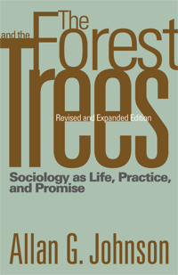

An updated exploration of sociology as a way of thinking
An updated exploration of sociology as a way of thinking


 An updated exploration of sociology as a way of thinking
An updated exploration of sociology as a way of thinking

|  |
The Forest and the TreesSociology as Life, Practice, and PromiseRevised and Expanded EditionAllan G. Johnsonpaper EAN: 978-1-59213-876-0 (ISBN: 1592138764) |
If sociology could teach everyone just one thing, what would it be? The Forest and the Trees is one sociologist's response to the hypothetical�the core insight with the greatest potential to change how people see the world and themselves in relation to it.
This revised and updated edition features:
� A new chapter that brings together the various aspects of the sociological model described in previous chapters with a detailed application to the origins of racism in the United States
� A discussion of how individuals can participate in social change by stepping off paths of least resistance
� The addition of graphics to illustrate the sociological model of systems and individuals
Excerpt available at www.temple.edu/tempress
Praise for the first edition:
"Johnson's prolegomenon to the study of sociology, written for beginning sociology students at all levels, presents a 'core view' of sociology: individuals always participate in something larger than themselves- social systems; social life flows from this relationship between smaller and larger, between the forest and the trees. . . . Johnson's discussion is masterful."
—Choice
"[A]n inspiring resource. . . I highly recommend this book as a very useful teaching aid for introductory sociology in the Berger and Mills traditions."
—The Canadian Review of Sociology and Anthropology
Visit Allan Johnson's website: www.agjohnson.us.
Introduction: Life, Practice, and Promise
1. The Forest, the Trees, and the One Thing
2. Culture: Symbols, Ideas, and the Stuff of Life
3. The Structures of Social Life
4. Population and Human Ecology: People, Space, and Place
5. Us, It, and Social Interaction
6. Living the Practice and the Promise
7. A Simple Framework for a Complicated World
Notes
Index
 | Allan G. Johnson is a sociologist, writer, and public speaker. After more than thirty years of college teaching, he now devotes himself entirely to writing and to public speaking on issues of privilege and oppression. He is author of numerous books including The Blackwell Dictionary of Sociology: A User's Guide to Sociological Language, The Gender Knot: Unraveling Our Patriarchal Legacy (Temple), and Privilege, Power, and Difference. |
Sociology
Gender Studies
Race and Ethnicity
© 2015 Temple University. All Rights Reserved. This page: http://www.temple.edu/tempress/titles/1366a_reg.html.